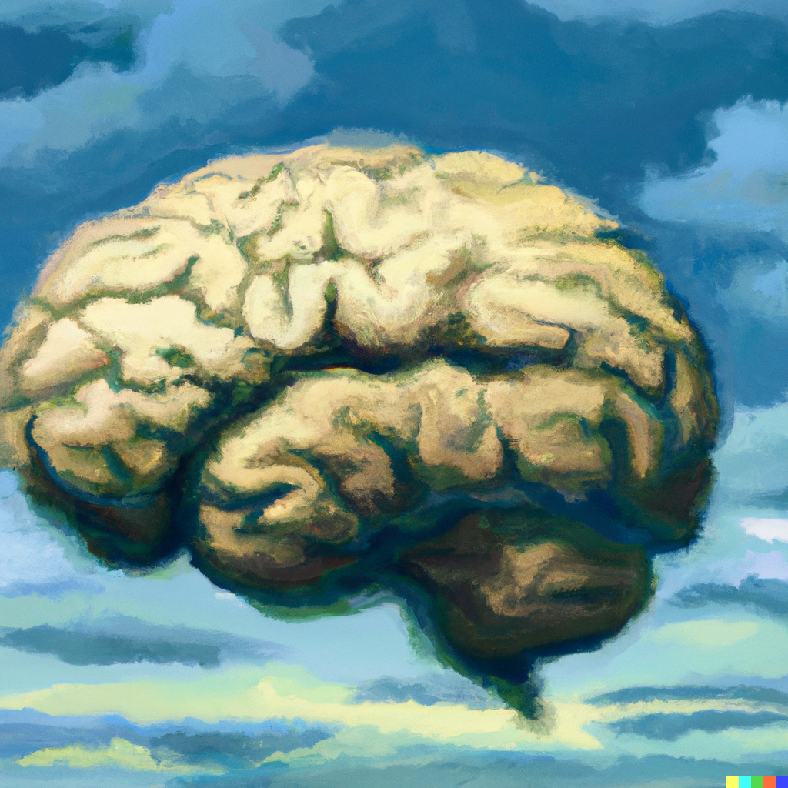

Andre Telfer
Graduate Student, Department of Neuroscience, Carleton University.
Contact: andretelfer@cmail.carleton.caRESEARCH INTERESTS
Computer Vision
Machine Learning

Neuroscience
BACKGROUND
- Student, MSc Neuroscience.
- BCs Computer Science, Math Minor.
- Carleton University, Ottawa, Canada.
MSc THESIS
My research revolves around bringing Computer Science tools to analyze Neuroscience problems. For my thesis, I'm developing tools for automated scoring of animal behaviour using computer vision. In particular, my work focuses on stress and emotionality recognition. I'm passionate about collaborating with groups on different Neuroscience datasets and invite anyone interested to send me an email.

ONGOING PROJECTS

Classification of events in Neuronal Dynamics
Time series applications of Deep Learning
Neural Plasticity in Children with Congenital Total-blindness
Using deep learning to track focus in an indented image recognition task.
Inverse Kinematics of Mouse Motion
Inferring full 3D geometry and motion of mouse gait from 2D pose data.
andretelfer@cmail.carleton.ca.